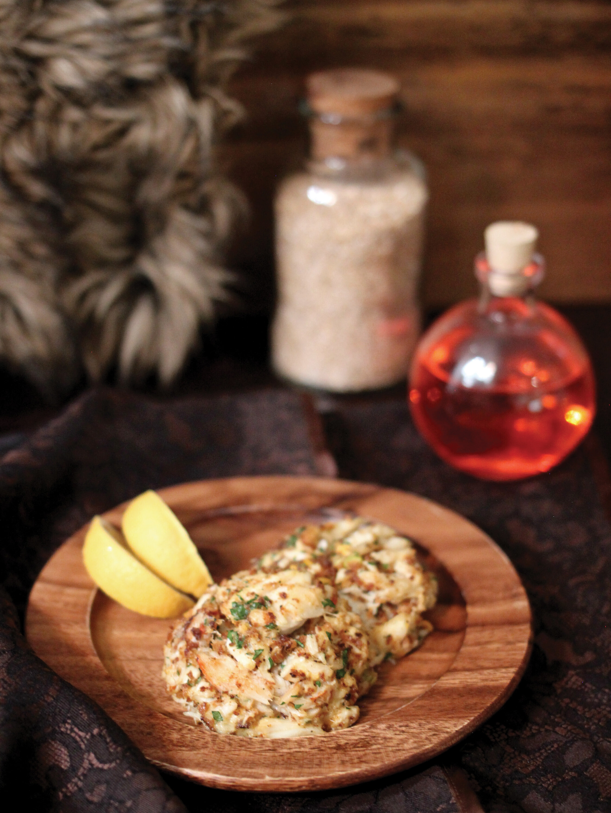

Crab Meat and Scuttle

Description
Mudcrab and scuttle are a beautiful combination of flavours that feature in this Dunmeri dip that’s a classic favourite.
Ingridients
- 2 handfuls of scuttle
- 4 pinches of wickwheat
- 1 large kwama egg
- the meat of one mudcrab (two portions)
- 1 handful of chopped bittergreen
Steps
- Beat eggs, wickwheat, and scuttle in a large bowl
- Slowly stir in crabmeat and bittergreen
- Bake covered in a hot over [sic] for one half hour to one hour (when a knife comes out clean)